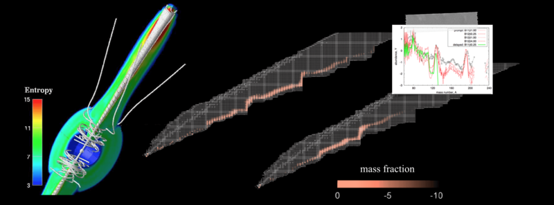

The r-process in Magnetorotational Supernovae (MR-SNe)
NOTE (Apr. 2016): The numercal data files (and this web site) are currntly in preparation. I hopfuly settle them by this summer.
N. Nishimura

Description
Here, we provide numerical data of trajectories for nucleosynthesis
calculations and the nucleosynthesis yields,
based on magnetorotational supernova (MR-SN) models
of NTT15 (Nishimura, Takiwaki and Thielemann 2015).
You can freely download these data,
and use for your nucleosynthesis and chemical evolution calculations.
Movie
- The nucleosyntheis flow of the r-process
- Strong progress of the r-process:
- Weaker progress of the r-process:
Data Files (GitHub may be more useful)
- Trajectories (rearranged, based on NTT15)
- NTT15p:
prompt-magnetic-jet model
- NTT15d:
delayed-magnetic-jet model
- NTT15i:
intermidiate-magnetic-jet model
- Trajectories (original)
- NTT15
- B11β0.25
- B11β1.00
- B12β0.25
- B12β1.25
- B12β4.00
- Nucleosynthesis yields
- NTT15: Abundances of r-process elements;
download (25 Kb)
References:
-
NTT15: N. Nishimura, T. Takiwaki and F.-K. Thielemann (2015)
ApJ 810:109,
arXiv:1501.06567,
ADS
-
We calculated trajectories for the r-process nucleosynthesis,
based on hydrodynamical models of MR-SNe.
-
TN15: T. Tsujimoto and N. Nishimura (2015)
ApJL 811:L10
arXiv:1509.00004
ADS
-
We applied nucleosynthesis yields from NTT15
to the chemical evolution of dSphs (e.g., Draco and Sculptor).
last updated: 07 Aug 2015